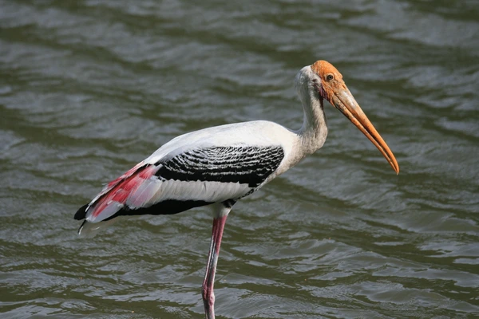
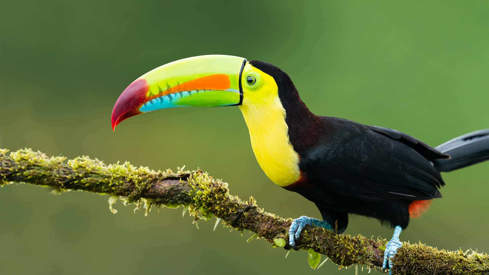

- Au coeur de la nature, Panama
- Située dans le Parc National Soberanía
- Vue panoramique sur la canopée
- Hébergement en pension complète
- Parque das Aves (Foz do Iguaçu), Bresil
- Parc dédié à la conservation des oiseaux exotiques
- Rencontre rapprochée avec des perroquets, toucans et autres espèces tropicales
- Expérience immersive dans un cadre protégé
- La forêt des rêves, Île Maurice
- Excursions pour observer des oiseaux endémiques (perruche de Maurice, pigeon rose)
- Randonnée guidée à travers des forêts protégées
- Hotel Paradis (comprend 9 restaurants, une vue sur la mer...)

- Réserve Naturelle de Montezuma, Colombie
- Biodiversité riche près du Parc National Tatamá
- Nombreuses espèces endémiques
- Logement en lodges immersifs dans la nature

- Parc National d’Anavilhanas, Amazonie
- Ecosystème riche et diversifié de l'Amazonie
- Observation en bateau des oiseaux tropicaux tels que le Coq-de-roche orange et le Jacamar à queue rousse.
- Exploration de l’un des plus grands archipels fluviaux du monde

- Parc National Sierra de Bahoruco, République Dominicaine
- Refuge pour 30 des 31 espèces endémiques du pays
- Espèces observables : perruche d’Hispaniola, trogon d’Hispaniola
- Hébergement disponible dans les villes voisines

- Réserve Naturelle de Montezuma, Colombie
- Biodiversité riche près du Parc National Tatamá
- Nombreuses espèces endémiques
- Logement en lodges immersifs dans la nature

- Parc National de Monteverde, Costa Rica
- Forêt de nuages abritant +400 espèces d’oiseaux
- Espèce emblématique : le Quetzal resplendissant
- Sentiers bien aménagés avec ponts suspendus pour observer les oiseaux à la cime des arbres
- La Forêt Atlantique (Mata Atlântica), Brésil
- Biodiversité exceptionnelle avec de nombreuses espèces endémiques
- Sites à visiter : Serra Bonita (Bahia), Parc de Tijuca (Rio de Janeiro)
- Espèces observables : Harpie féroce, Tangara à sept couleurs, Toucan à bec noir